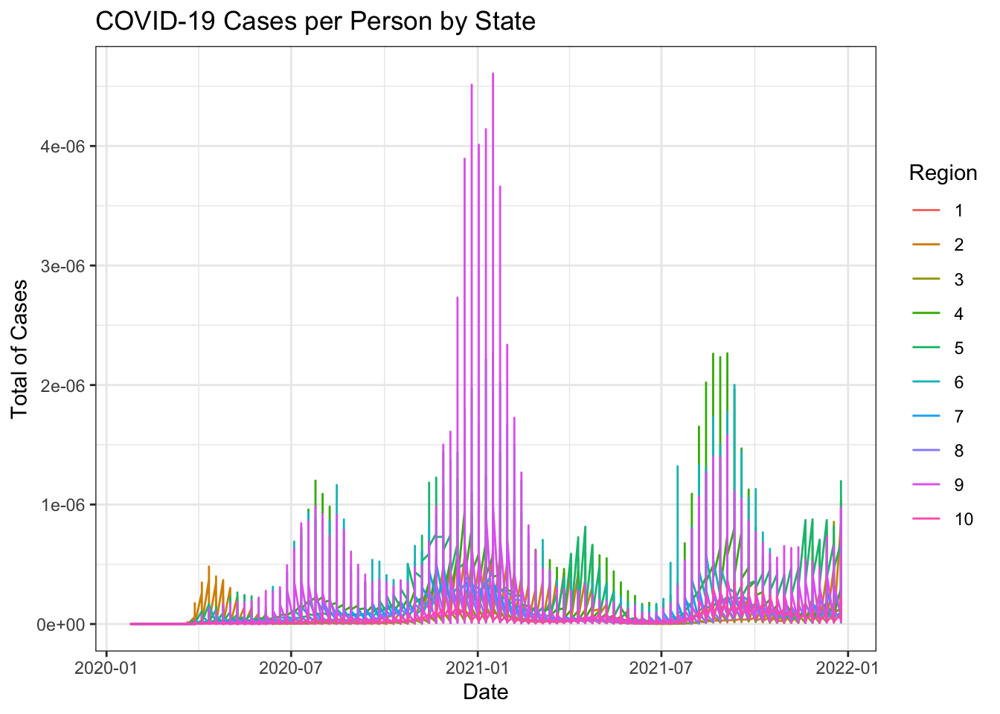

source("census_key.R")PS3_APIs_Census
We plan to explore the relationship between COVID-19 death rates and vaccination rates across US states by visually examining their correlation. This analysis will involve gathering COVID-19 related data from the CDC’s API and then extensively processing it to merge the various datasets. Since the population sizes of states vary significantly, we will focus on comparing rates rather than absolute numbers. To facilitate this, we will also source population data from the US Census to accurately calculate these rates.
- Get an API key from the US Census at https://api.census.gov/data/key_signup.html. Save it an object called census_key.
- Use an internet search to find information about the US Census APIs to obtain vintage population estimates. Define a variable called api with the URL.
api <- "api.census.gov/data/2021/pep/population"- Read the documentation for the API and use the httr2 package to prepare a request that gives us 2020 and 2021 population estimates for each state. Save the request in a variable called request, without performing it. Compare the request to the examples in the documentation to see if you are on the right track.
library(httr2)
request <- request(api) |>
req_url_query(get = I("POP_2020,POP_2021,NAME"),
'for' = I("state:*"),
key=census_key)
request<httr2_request>GET
api.census.gov/data/2021/pep/population?get=POP_2020,POP_2021,NAME&for=state:*&key=a36a580b2520bd992aa8b77a767e8198de849824Body: empty- Now perform the request and examine the data that is returned. Save the result to request (overwrite it).
request <- request |> req_perform()
request<httr2_response>GET
https://api.census.gov/data/2021/pep/population?get=POP_2020,POP_2021,NAME&for=state:*&key=a36a580b2520bd992aa8b77a767e8198de849824Status: 200 OKContent-Type: application/jsonBody: In memory (2112 bytes)save(request, file="request.rda")- We see the request returned data in JSON format. We can see the content with the function req_body_json, but we want a data frame. Use the jsonlite package to convert the raw JSON data into a data frame. Save it in population.
#json is the official format of APIs
#load("request.rda")
library(jsonlite)
#request |> resp_body_json()
population<-request |>
resp_body_string() |>
fromJSON(flatten=TRUE)
#population is a matrixsave(population, file="population.rda")- Examine the table. Notice 1) it is not tidy, 2) the column types are not what we want, and 3) the first row is a header. Convert population to a tidy dataset. Remove the state ID column and change the name of the column with state names to state_name. Add a column with state abbreviations called state. Make sure you assign the abbreviations for DC and PR correctly. Hint: Start by using the janitor package to make the first row the header.
library(tidyverse)── Attaching core tidyverse packages ──────────────────────── tidyverse 2.0.0 ──
✔ dplyr 1.1.1 ✔ readr 2.1.4
✔ forcats 1.0.0 ✔ stringr 1.5.0
✔ ggplot2 3.4.1 ✔ tibble 3.2.1
✔ lubridate 1.9.2 ✔ tidyr 1.3.0
✔ purrr 1.0.1
── Conflicts ────────────────────────────────────────── tidyverse_conflicts() ──
✖ dplyr::filter() masks stats::filter()
✖ purrr::flatten() masks jsonlite::flatten()
✖ dplyr::lag() masks stats::lag()
ℹ Use the conflicted package (<http://conflicted.r-lib.org/>) to force all conflicts to become errorslibrary(janitor)
Attaching package: 'janitor'
The following objects are masked from 'package:stats':
chisq.test, fisher.testload("population.rda")
population<-population|>
row_to_names(1) |> #first row to the row name
as_tibble() |> #convert to a tibble, but still a matrix
select(-state)|> #eliminate state names
rename(state_name = NAME)|>
pivot_longer(-state_name, names_to = "year",values_to="population") |> #do not split state name the others two yes
mutate(year=str_remove(year,"POP_")) |> #remove de word pop_
mutate(across(-state_name,as.numeric))|> #convert years to numbers
mutate(state=state.abb[match(state_name,state.name)])|>
mutate(state=case_when(
state_name =="District of Columbia"~"DC",
state_name =="Puerto Rico"~"PR",
.default=state))- As a check, make a barplot of states’ 2021 populations
pop_2021<- population|>
filter(year==2021)
ggplot(pop_2021, aes(x = reorder(state, population), y = population)) +
geom_bar(stat = "identity", fill = "skyblue") +
labs(title = "Population of States in 2021",
x = "State",
y = "Population") +
theme(axis.text.x = element_text(angle = 45, hjust = 1))- To practice pivot_wider make a bar plot of percent change in population by state.
population<-population|>
pivot_wider(names_from=year, values_from=c(population))|>
mutate(percent_change = ((`2021` - `2020`) / `2020`)*100)
ggplot(population, aes(x = state, y = percent_change)) +
geom_bar(stat = "identity", fill = "skyblue", color = "black") +
labs(title = "Percentage Change in Population by State",
x = "State", y = "Percent Change") +
theme_minimal() +
theme(axis.text.x = element_text(angle = 45, hjust = 1))- Add the following region numbers to the data:
cdc_regions_list <- list(
"1" = c("Connecticut", "Maine", "Massachusetts", "New Hampshire", "Rhode Island", "Vermont"),
"2" = c("New Jersey", "New York", "Puerto Rico", "Virgin Islands"),
"3" = c("Delaware", "District of Columbia", "Maryland", "Pennsylvania", "Virginia", "West Virginia"),
"4" = c("Alabama", "Florida", "Georgia", "Kentucky", "Mississippi", "North Carolina", "South Carolina", "Tennessee"),
"5" = c("Illinois", "Indiana", "Michigan", "Minnesota", "Ohio", "Wisconsin"),
"6" = c("Arkansas", "Louisiana", "New Mexico", "Oklahoma", "Texas"),
"7" = c("Iowa", "Kansas", "Missouri", "Nebraska"),
"8" = c("Colorado", "Montana", "North Dakota", "South Dakota", "Utah", "Wyoming"),
"9" = c("Arizona", "California", "Hawaii", "Nevada", "American Samoa", "Commonwealth of the Northern Mariana Islands", "Federated States of Micronesia", "Guam", "Marshall Islands", "Republic of Palau"),
"10" = c("Alaska", "Idaho", "Oregon", "Washington"))
cdc_regions <- do.call(rbind, lapply(names(cdc_regions_list), function(region) {
data.frame(region = region, state_name = cdc_regions_list[[region]])
})) |>
mutate(region = factor(as.numeric(region)))population<-left_join(population,cdc_regions, by="state_name")- Go to https://data.cdc.gov/ and learn about the CDC API for COVID-19 data. Find an API that provides state level data from SARS-COV2 cases and store it in a data frame.
api<-"https://data.cdc.gov/resource/pwn4-m3yp.json"library(httr2)
library(jsonlite)
covid_cases<- request(api) |>
req_url_query("$limit" = 10000000) |>
req_perform() |>
resp_body_string() |>
fromJSON(flatten = TRUE)- Note that we obtained weekly data. Wrangle the table so that keep only states for which you have population data. Keep the following variables: state, epidemiological week and year, and new cases (as numbers). Order by state, then chronologically. Hint: Use as_date, epiweek and epiyear functions in lubridate package.
library(lubridate)
pop_states <- population |>
pull(state) |>
unique()
state_cases <- covid_cases |>
filter(state%in%pop_states) |>
mutate(df=as_date(ymd_hms(end_date))) |>
mutate(new_cases = parse_number(new_cases)) |>
mutate(epidemiological_year = epiyear(df), epidemiological_week = epiweek(df)) |> filter(epidemiological_year==2020 | epidemiological_year==2021)|>
select(state, epidemiological_year, epidemiological_week, new_cases) |>
arrange(state,epidemiological_year, epidemiological_week) |>
filter(!is.na(new_cases))- Now repeat the same exercise for hospitalizations. However, before you start, notice the code for extracting the data is the same as in the previous exercise except for the API URL. Write a function that takes an API URL and returns the data in a data frame.
library(httr2)
library(jsonlite)
library(lubridate)
get_cdc_data <- function(api){
data_json<- request(api) |>
req_url_query("$limit" = 10000000) |>
req_perform() |>
resp_body_string() |>
fromJSON(flatten = TRUE)
return(data_json)
}- Now use the function to get the raw hospital data. Examine the data once you have it to determine if its daily or weekly.
api_hosp<-"https://data.cdc.gov/resource/39z2-9zu6.json"
hosp_raw <- get_cdc_data(api_hosp)- Collapse the data into weekly data and keep the same columns as in the cases dataset, except keep total weekly hospitalizations instead of cases. Remove weeks with less than 7 days reporting.
regions<-c("R1","R2","R3","R4","R5","R6","R7","R8","R9","R10")
hosp <- hosp_raw |>
mutate(collection_date=as_date(ymd_hms(collection_date))) |> mutate(epidemiological_year=epiyear(collection_date),
epidemiological_week = epiweek(collection_date)) |>
select(collection_date, jurisdiction,
epidemiological_year,epidemiological_week, total_hospitalized_covid) |>
filter(!jurisdiction%in%regions) |>
rename(state=jurisdiction) |>
group_by(epidemiological_week,epidemiological_year, state)|>
summarise(total_weekly_hospitalizations = sum(as.numeric(total_hospitalized_covid)))`summarise()` has grouped output by 'epidemiological_week',
'epidemiological_year'. You can override using the `.groups` argument.weekly_dat <- hosp_raw |>
mutate(collection_date=as_date(ymd_hms(collection_date))) |>
mutate(epidemiological_year=epiyear(collection_date), epidemiological_week = epiweek(collection_date)) |> select(collection_date, epidemiological_year,epidemiological_week) |> group_by(epidemiological_year,epidemiological_week) |>
summarize(days_in_week = n_distinct(collection_date)) |>
filter(days_in_week < 7) |>
filter(epidemiological_year %in% c(2020, 2021))|>
ungroup() |> print ()`summarise()` has grouped output by 'epidemiological_year'. You can override
using the `.groups` argument.# A tibble: 1 × 3
epidemiological_year epidemiological_week days_in_week
<dbl> <dbl> <int>
1 2020 31 1- Repeat what you did in the previous two exercises for provisional COVID-19 deaths.
api_death<-"https://data.cdc.gov/resource/r8kw-7aab.json"
deaths_raw <- get_cdc_data(api_death)
deaths <- deaths_raw |>
mutate(week_ending_date=as_date(ymd_hms(week_ending_date))) |>
mutate(epidemiological_year=epiyear(week_ending_date),
epidemiological_week = epiweek(week_ending_date)) |>
rename(state_name=state) |>
filter(epidemiological_year %in% c(2020, 2021))|>
select(epidemiological_week,epidemiological_year,state_name,covid_19_deaths)- Obtain vaccination data. Keep the variables series_complete and booster along with state and date. Remember we will later want to join with the others.
api_vaccines<- "https://data.cdc.gov/resource/rh2h-3yt2.json"
vax_raw <- get_cdc_data(api_vaccines)
vax <- vax_raw |> mutate(date=as_date(ymd_hms(date))) |>
mutate(epidemiological_year=epiyear(date), epidemiological_week = epiweek(date)) |>
rename(state=location) |>
filter(epidemiological_year %in% c(2020, 2021)) |>
select(epidemiological_week,epidemiological_year,state,date,series_complete_daily,booster_daily) |>
group_by(epidemiological_week,epidemiological_year,state) |>
summarise(total_weekly_vac = sum(as.numeric(series_complete_daily)),
total_weekly_boost = sum(as.numeric(booster_daily))) |>
ungroup ()`summarise()` has grouped output by 'epidemiological_week',
'epidemiological_year'. You can override using the `.groups` argument.- Now we are ready to join the tables. We will only consider 2020 and 2021 as we don’t have population sizes for 2020. However, because we want to guarantee that all dates are included we will create a data frame with all possible weeks. We can use this:
all_dates <- data.frame(date = seq(make_date(2020, 1, 25), make_date(2021, 12, 31), by = "week")) |>
mutate(date = ceiling_date(date, unit = "week", week_start = 7) - days(1)) |>
mutate(epidemiological_year = epiyear(date), epidemiological_week = epiweek(date))
dates_and_pop <- cross_join(population, all_dates)Use this to join all the tables in a way that preserves these dates. Call the final table dat.
dat <- left_join(dates_and_pop, state_cases, by=c("epidemiological_week","epidemiological_year","state"))
dat <- left_join(dat, hosp, by=c("epidemiological_week","epidemiological_year","state"))
dat <- left_join(dat, deaths, by=c("epidemiological_week","epidemiological_year","state_name"))
dat <- left_join(dat, vax, by=c("epidemiological_week","epidemiological_year","state"))- Plot a trend plot with cases per person for all states with color representing region.
dat |>
mutate(population=sum(`2020`,`2021`)) |>
mutate(cases_per_person = new_cases / population) |>
ggplot(aes(x = date, y = cases_per_person,color = region)) +
geom_line() +
labs(x = "Date",
y = "Total of Cases",
color = "Region",
title = "COVID-19 Cases per Person by State") +
theme_bw() 
- Repeat the above for hospitalizations and deaths. Use pivot_longer and facet_wrap. Plot rates per 100,000 people. Place the plots on top of each other.
# dat |>
# mutate(population=sum(`2020`,`2021`)) |>
# mutate(case_rate = new_cases / population * 100000,
# hosp_rate = new_hospitalizations / population * 100000,
# death_rate = covid_19_deaths / population * 100000) |>
# pivot_longer(cols = c(case_rate, hosp_rate, death_rate),
# names_to = "variable",
# values_to = "rate_per_person") |>
# ggplot(aes(x = date, y = rate_per_person, color = region)) +
# geom_line() +
# facet_wrap(~ variable, nrow = 3, scales = "free_y") +
# labs(x = "Date",
# y = "Rate per 100,000 Persons",
# color = "Region",
# title = "COVID-19 Cases, Hospitalizations, and Deaths Per 100,000 Persons by State") +
# theme_bw()- For the period January 1 to July 1, 2021 compute the deaths per day per 100,000 people in each state as well as the vaccination rate (primary series) by September 1st. Plot these against each other.
#dat - Repeat the exercise for the booster for October 1 to December 31, 2021.
#dat